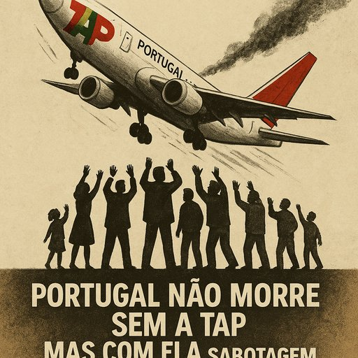

Publicado em 2025-07-11 16:51:33
A TAP continua a ser apresentada como “estratégica”, “fundamental para o turismo” e “instrumento de soberania”.
Mas estas palavras, repetidas como mantras por políticos e comentadores do regime, já não convencem ninguém com dois dedos de testa e uma conta bancária esvaziada de tanto pagar impostos.
Porque a verdade nua e crua é esta:
Portugal não precisa da TAP para viver. Mas a TAP tem vivido às custas de Portugal.
Portugal é um dos destinos turísticos mais cobiçados da Europa — e não por causa da companhia aérea de bandeira.
É procurado pelo clima, cultura, comida, segurança e custo de vida.
Os turistas vêm — com TAP ou sem TAP.
As companhias low-cost dominam o tráfego aéreo nacional:
Desde 2020, os contribuintes portugueses injetaram mais de 3,2 mil milhões de euros na TAP.
E o retorno? Quase zero.
Mesmo com um lucro de 54 milhões em 2023, estamos a falar de 1,7% do montante gasto.
Se um cidadão comum perdesse 98,3% do seu investimento pessoal, chamaria a isso falência.
Mas o Estado chama a isso “estratégia”.
A TAP tem sido uma máquina partidária:
É “estratégica” sim — mas para os que vivem do Estado, e não para os que o sustentam.
Quando companhias nacionais desaparecem noutros países, o mercado responde:
Portugal não ficará isolado sem a TAP.
Aliás, provavelmente terá melhores tarifas, mais rotas e mais concorrência.
Portugal pode e deve ter presença no ar.
Mas isso não exige manter viva uma companhia que se alimenta de dinheiros públicos como se fosse um ministério voador.
O país não morre sem a TAP.
Mas com ela a sugar o orçamento, a sabotagem continua.
E é o povo — sempre o povo — quem paga os voos dos senhores do ar.
Francisco Gonçalves
Crítico dos voos sem destino, observador de um país que tem tudo para levantar voo — se largar o lastro da mentira
“O país não morre sem a TAP. Mas com ela, continua a sangrar em silêncio.
Porque voar com bandeira no avião não justifica um buraco nos bolsos de quem nunca saiu do chão.”— Fragmentos de Caos